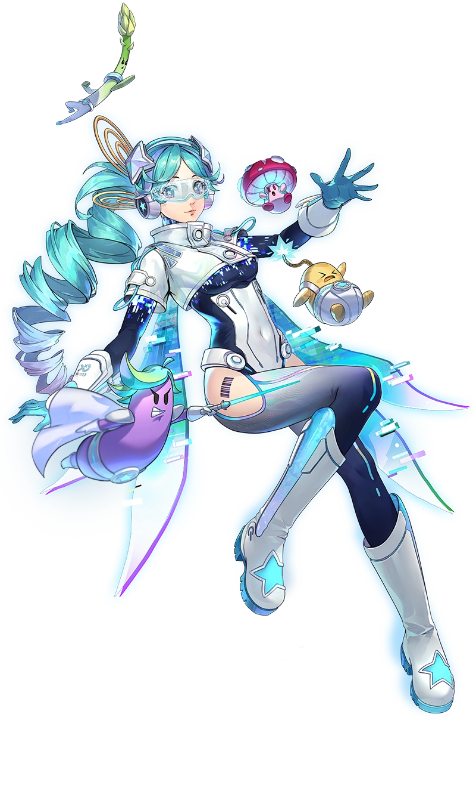
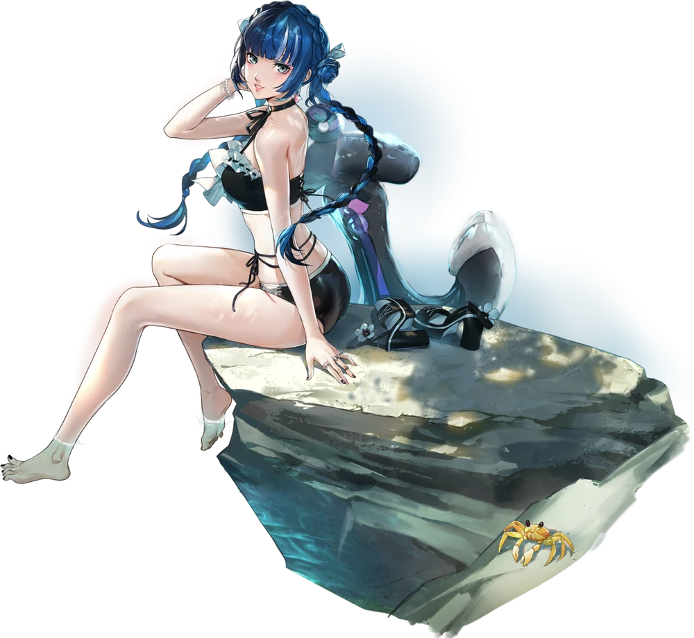

PersonaDLE
Nouveautés v2.2 — en cours de développement
What's New in v2.2 — in development
Cette page se remplit au fil de la v2.2. Le durcissement des limites anti-bruteforce et l'annonce quotidienne sur Discord ne changent rien de visible en jeu ; les défis, vos retours de septembre et deux nouveaux All-Out Attack, si.
This page fills up as v2.2 goes on. Hardening the anti-bruteforce limits and the daily Discord announcement change nothing visible in game; challenges, your September feedback and two new All-Out Attacks do.
⚔️ Deux nouveaux All-Out Attack
⚔️ Two new All-Out Attacks
🌌 All-Out Attack — Bui Cosmic
Yui traverse la galaxie avec son skin Cosmic de Persona 5 X. Une seule silhouette, un ciel entier à deviner.
🌌 All-Out Attack — Bui Cosmic
Yui crosses the galaxy with her Cosmic skin from Persona 5 X. One silhouette, a whole sky to guess.

✦★✦★✦
P5X
Bui Cosmic
YUI — Persona 5 X
☀️ All-Out Attack — Berry Summer
Ichigo Shikano rejoint la plage avec son skin Summer, aux côtés de Wonder, Closer, Moko, Marian, Puppet et Chord.
☀️ All-Out Attack — Berry Summer
Ichigo Shikano hits the beach with her Summer skin, joining Wonder, Closer, Moko, Marian, Puppet and Chord.

✦★✦★✦
P5X
Berry Summer
Ichigo Shikano — Persona 5 X
🗣️ Vos retours, appliqués
🗣️ Your feedback, applied
Huit remarques envoyées par des joueurs sur le Discord, toutes traitées. Merci à ceux qui prennent le temps d'écrire — c'est comme ça que le jeu s'améliore.
Eight remarks sent by players on the Discord, all of them handled. Thanks to everyone who takes the time to write — that's how the game gets better.
🎯
Choisis ton mode favori
Pick your favorite mode
Ton profil affichait comme « mode favori » celui que tu jouais le plus, sans te demander ton avis. Tu le choisis maintenant toi-même, dans la personnalisation du profil. Et le mode où tu réussis le mieux a sa propre ligne, Meilleur mode — calculé sur ton taux de victoire, à partir de 3 parties.
Your profile used to show the mode you played most as your "favorite", without asking. You now pick it yourself, in the profile customization. And the mode you do best in gets its own line, Best Mode Overall — based on your win rate, from 3 games on.
⚔
Défier un ami, quand tu veux
Challenge a friend, whenever
Le bouton n'apparaissait qu'après une victoire — et disparaissait si tu rechargeais la page. Il est maintenant là dès que tu arrives sur un mode, il reste après un abandon, et il survit au rechargement. Tant que tu n'as pas fini ta partie du jour, le défi porte un score de référence ; après, c'est ton vrai score. Tu peux aussi défier directement depuis ta liste d'amis — en Mode Expert aussi, si vous l'avez débloqué tous les deux.
The button only showed up after a win — and vanished if you reloaded the page. It's now there as soon as you land on a mode, it stays after a give-up, and it survives a reload. Until you finish your daily game, the challenge carries a reference score; after that, it's your real score. You can also challenge straight from your friends list — in Expert Mode too, if you've both unlocked it.
👥
Une page Amis en trois onglets
A Friends page in three tabs
Tout s'empilait sur une seule page. Il y a maintenant Amis, Boîte (messages et défis, avec le nombre de non-lus) et Trouver. Les boutons d'une ligne d'ami ont enfin la même taille, la poubelle des messages se voit, et « Ajouter » n'a plus deux « + ».
Everything was stacked on one page. There are now Friends, Inbox (messages and challenges, with the unread count) and Find. The buttons on a friend's row are finally the same size, the trash icon on messages is visible, and "Add" no longer has two "+" signs.
⚙
Les paramètres partout, et l'autoplay à ta main
Settings everywhere, and autoplay your way
Le bouton ⚙ est maintenant à côté du mode sombre sur l'accueil et sur chaque mode, pas seulement sur le profil. Et deux nouveaux réglages : couper la lecture automatique de la musique sur ton profil, et/ou sur le profil des autres joueurs — séparément.
The ⚙ button now sits next to dark mode on the home page and on every mode, not just on the profile. And two new settings: turn off music autoplay on your own profile, and/or on other players' profiles — separately.
🟡
Un True Confidant qui a de l'allure
A True Confidant that looks the part
Un ami au rang 10 se reconnaît à un anneau doré et à une petite pastille « ✦ MAX » — plus de halo qui clignote, et plus de texte brut qui s'incrustait sous l'avatar toutes les 30 secondes sur la page Amis.
A rank-10 friend now shows a gold ring and a small "✦ MAX" pill — no more blinking halo, and no more raw text popping under the avatar every 30 seconds on the Friends page.
Corrections notables
- Les boutons ronds (lecture de la musique de profil, pastilles de couleur de bordure, ⚙) étaient étirés en ovale.
- Dans les stats du Mode Expert, les chiffres n'étaient pas alignés sous leurs libellés et se fondaient dans le fond en mode sombre.
- En Personae Expert, la fiche de Minthe (Mio Natsukawa) laissait lire son nom en français à cause de l'accent — le masque ignore maintenant les accents dans les six langues.
- Iwatodai Dorm est rattachée à Persona 3, plus à Reload.
- Les joueurs en portugais ne pouvaient plus enregistrer leur profil (avatar, bordure, badges…) : la langue était refusée par le serveur.
- Le bouton de récupération de série affichait « 0 → {{count}} jours » au lieu du vrai nombre.
- Sur le profil d'un ami, la série affichée n'était pas la même que sur son propre profil.
- Un défi envoyé sans avoir jamais touché ses filtres pouvait proposer un personnage absent de l'autocomplétion de l'ami.
Notable fixes
- Round buttons (profile music play, border color swatches, ⚙) were stretched into ovals.
- In the Expert Mode stats, the numbers weren't lined up under their labels and blended into the background in dark mode.
- In Personae Expert, Minthe's card (Mio Natsukawa) gave away her name in French because of an accent — the mask now ignores accents in all six languages.
- Iwatodai Dorm now belongs to Persona 3, not Reload.
- Portuguese players couldn't save their profile anymore (avatar, border, badges…): the language was rejected by the server.
- The streak recovery button read "0 → {{count}} days" instead of the actual number.
- On a friend's profile, the streak shown wasn't the same as on their own profile.
- A challenge sent without ever touching your filters could pick a character missing from your friend's autocomplete.
⚔ Les défis, remis d'aplomb
⚔ Challenges, properly fixed
Un défi devait traverser beaucoup d'étapes avant d'arriver jusqu'à toi : une notification, une acceptation, une redirection, puis une partie sur une cible bien précise. À chacune de ces étapes, quelque chose pouvait casser sans le moindre message. Voici ce qui a changé.
A challenge had to travel through a lot of steps before reaching you: a notification, an accept, a redirect, then a game on one very specific answer. At every one of those steps, something could break without a single message. Here's what changed.
🌙
Un défi reçu le soir se joue enfin le lendemain
A challenge received at night can finally be played the next day
C'était le pire des cas : un ami t'envoie un défi à 23 h 55, tu l'acceptes le lendemain matin. Tu arrivais bien sur le bon mode… mais sans défi. Et il restait « en cours » pour toujours, sans que ton ami ait jamais de résultat. Un défi compte désormais le jour où tu le joues, pas le jour où il a été envoyé.
This was the worst one: a friend sends you a challenge at 11:55 pm, you accept it the next morning. You did land on the right mode… with no challenge on it. And it stayed "in progress" forever, with your friend never getting a result. A challenge now counts from the day you play it, not the day it was sent.
🧭
Plus de page introuvable en acceptant
No more missing page when you accept
Selon l'adresse à laquelle tu jouais, accepter un défi pouvait t'envoyer sur une page qui n'existe pas — le défi, lui, était déjà lancé. Ces liens sont maintenant calculés comme tous les autres liens du site.
Depending on the address you were playing from, accepting a challenge could send you to a page that doesn't exist — while the challenge had already started. Those links are now built like every other link on the site.
🎯
Fini les parties qui ne comptent nulle part
No more games that count nowhere
Quand la réponse d'un défi n'était plus jouable sur le mode où tu arrivais, le jeu te faisait jouer la partie du jour à la place — sans rien dire. Résultat : ni défi relevé, ni partie enregistrée dans tes statistiques. Le défi est maintenant annulé proprement, et on te le dit.
When a challenge's answer was no longer playable on the mode you landed on, the game quietly gave you the daily game instead. The result: no challenge beaten, and no game recorded in your stats either. The challenge is now cancelled cleanly, and you get told.
🚪
Reprendre ou abandonner, depuis la page Amis
Resume or give up, from the Friends page
Chaque défi en cours a maintenant un bouton Reprendre et un bouton Abandonner dans tes messages. Ils marchent même si ton téléphone a oublié la partie, ou si tu l'avais acceptée depuis un autre appareil. Abandonner ne compte pas comme une défaite.
Every challenge in progress now has a Resume and a Give up button in your messages. They work even if your phone forgot the game, or if you accepted it on another device. Giving up does not count as a loss.
✨
Une animation manquée revient
A missed animation comes back
Si tu changeais de page à la seconde où la notification de défi apparaissait, elle était perdue définitivement — alors que le défi, lui, t'attendait toujours. Elle te sera reproposée. Et si tu la fermes par la croix, elle reste consultable depuis la page Amis, comme avant.
If you changed page the second a challenge notification appeared, it was gone for good — even though the challenge was still waiting for you. It now comes back. And if you close it with the ✕, it stays available on the Friends page, as before.
🏠
Plus de retour forcé à l'accueil
No more forced trip back home
L'écran qui t'annonce qu'un ami a relevé ton défi te renvoyait à l'accueil au bout de 11 secondes, même en pleine navigation — y compris pendant que tu essayais d'accepter un autre défi. Il se contente maintenant de se fermer.
The screen telling you a friend took on your challenge sent you back to the home page after 11 seconds, even mid-browsing — including while you were trying to accept another challenge. It now simply closes.
Corrections notables
- Cliquer deux fois sur « Accepter » parce que rien ne semblait se passer lançait deux acceptations.
- Le message « termine ton défi en cours » ne disait pas lequel — alors qu'il peut vivre sur n'importe lequel des 6 modes.
- Accepter un défi depuis la page Amis n'appliquait pas les mêmes règles que depuis la notification (Mode Expert, points de Social Link).
- Un défi périmé pouvait laisser en place les filtres d'opus qu'il avait imposés, et une partie de la veille sur le mauvais personnage.
Notable fixes
- Clicking "Accept" twice because nothing seemed to happen fired two accepts.
- The "finish your current challenge first" message didn't say which one — even though it can live on any of the 6 modes.
- Accepting a challenge from the Friends page didn't apply the same rules as from the notification (Expert Mode, Social Link points).
- An expired challenge could leave its opus filters in place, and yesterday's game on the wrong character.